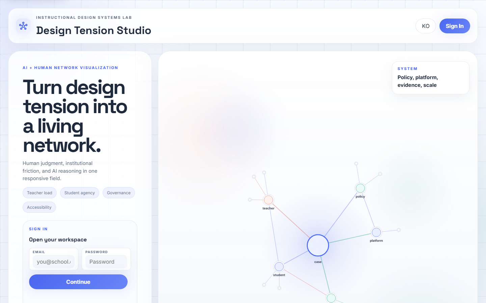
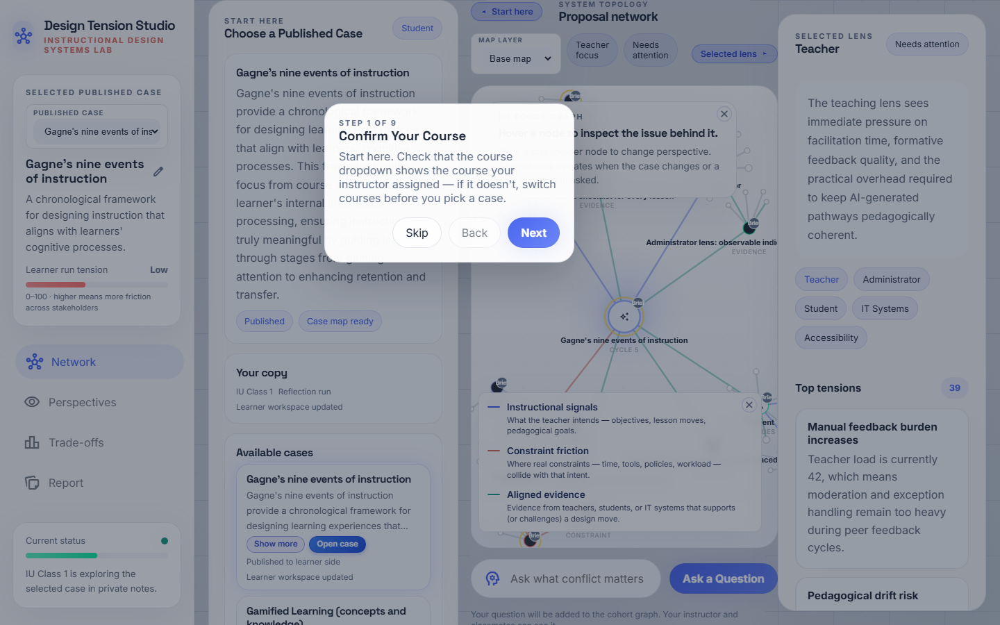
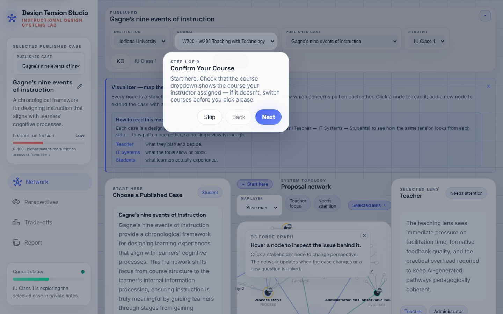
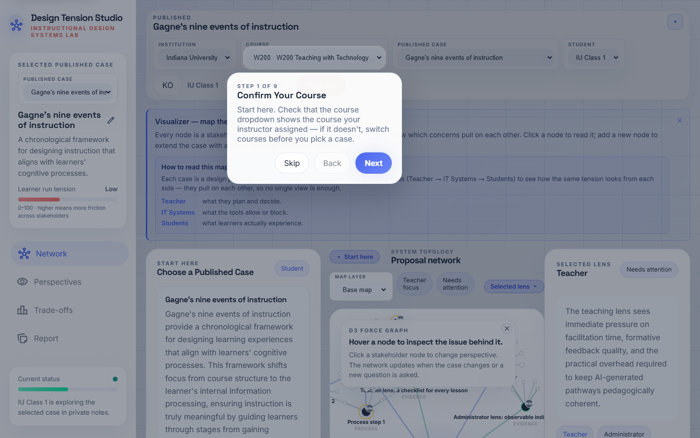
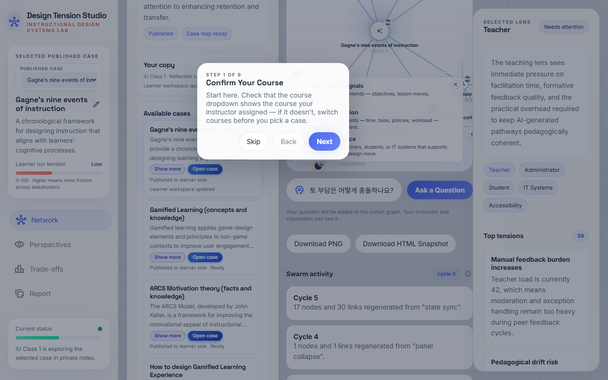
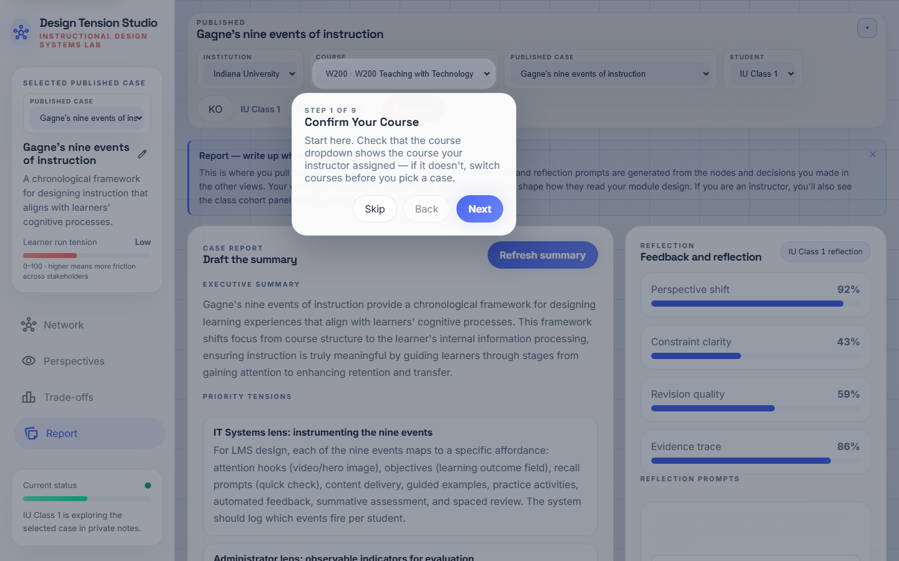

학생 학습 여정 가이드
Swarm ID로 하나의 교수설계 결정을 단계별로 깊이 있게 탐구하는 방법을 안내합니다. 케이스를 여는 순간부터 회고를 제출하기까지, 각 단계에서 무엇을 하고, 무엇을 기대할 수 있으며, 어디서 가장 많이 막히는지를 짚어드립니다.
시작 전에: Swarm ID는 무엇이고, 무엇이 아닌가
Swarm ID는 교수설계 결정을 돕는 사고 도구입니다. 과제 답을 찍어주는 AI가 아닙니다. 케이스를 열면 Swarm ID가 강사의 설명요약을 이미 분석해 이해관계자·제약·긴장 관계가 얽혀 있는 네트워크 맵으로 만들어 둡니다. 여러분이 할 일은 그 맵을 하나의 설계 공간으로 보고 돌아다니는 것입니다 — 질문을 던지고, 설득력이 약한 답에 반박하고, 자기 생각을 얹어가면서요.
질문 하나당 다섯 명의 AI 에이전트가 서로 다른 입장에서 답합니다. 그래서 합의가 아니라 충돌이 보입니다. 그 충돌이 핵심입니다. 목표는 "정답"을 찾는 게 아니라, 안 보이던 트레이드오프를 드러내고 거기서 스스로 방어할 수 있는 설계 결정을 내리는 겁니다. 회고에서 바로 그 결정을 쓰게 됩니다.
파악하기 — 내 수업과 케이스 찾기
지금 맞는 수업에 들어와 있는지 확인하고, 강사가 지정한 케이스를 열고, 첫 인상을 잡습니다. 여기에 3분을 넘기지 마세요.
-
내 수업이 맞는지 확인
상단바 · 수업 드롭다운제일 먼저 상단바의 수업 드롭다운이 강사가 알려준 수업으로 설정돼 있는지 확인하세요. 아니라면 케이스를 고르기 전에 수업을 먼저 바꿉니다. 여러분이 한 모든 작업은 현재 선택된 수업 아래에 저장됩니다.
이렇게 보이면 정상드롭다운에 Learner Motivation(또는 강사가 지은 이름)이 뜨고, 아래 케이스 목록에 카드가 몇 장 보입니다.
가장 흔한 실수엉뚱한 수업에 로그인해서 "케이스가 안 보여요"라고 손을 듭니다. 목록이 비어 있으면 먼저 드롭다운을 확인하세요.

로그인 화면 — 로그인이 완료되면 수업 드롭다운이 활성화됩니다. -
케이스 목록 훑어보기
케이스 목록 · 제목, 3줄 요약, 더보기케이스 목록에는 강사가 공개한 카드만 보입니다 — 초안은 숨겨져 있습니다. 카드마다 제목과 설명요약의 첫 세 줄이 뜹니다. 더보기를 누르면 카드를 굳이 열지 않고도 요약을 더 펼쳐 볼 수 있어요.
이 시점에서 "내가 받을 케이스가 어떤 설계 문제(ADDIE 단계, 5E 구간, AI/CT 수업 등)를 다루는지" 감만 잡으면 됩니다.

카드는 3줄로 잘리고, 더보기와 파란 케이스 열기 버튼이 나란히 놓입니다. -
지정된 케이스 열기
카드 · 파란 케이스 열기 버튼강사가 지정한 카드의 케이스 열기 버튼을 누르세요. 왼쪽에 설명요약이 뜨고, 가운데에 네트워크 맵이 그려지며, 오른쪽에 선택된 관점 패널이 자리 잡습니다.
이렇게 보이면 정상화면이 세 영역으로 나뉩니다: 설명요약(왼쪽), 네트워크 맵(가운데), 선택된 관점(오른쪽). 어느 한 곳을 건드리면 나머지도 같이 업데이트됩니다.

첫 접속 시 안내 카드가 3패널 레이아웃을 짚어줍니다.
맥락 잡기 — 질문 던지기 전에 설계 문제부터 이해하기
대부분의 학생이 이 단계를 건너뛰고 바로 스웜에 질문부터 던집니다. 참으세요. 아직 이해하지 못한 설계에 대해 쓸모 있는 질문을 던질 수 없습니다 — 먼저 읽고, 다음에 질문하세요. 5–8분을 잡으세요.
-
설명요약부터 꼼꼼히 읽기
왼쪽 패널 · 인테이크왼쪽 패널에는 강사가 올린 설명요약이 있습니다. 맵을 만지기 전에 이걸 먼저 읽어야 설계 문제, 대상 학습자, 제약이 머리에 들어옵니다. 이 패널은 세션 내내 자주 돌아오게 됩니다.
다 읽었으면 좌측 쉐브론으로 패널을 접으세요 — 그래프가 남는 공간으로 확 퍼지면서 맵이 더 크게 보입니다.
다음으로 넘어갈 준비가 됐다는 신호설명요약을 다시 안 보고도 세 가지를 답할 수 있다: 누가 학습자인가? 목표는 무엇인가? 주된 제약은 무엇인가?
가장 흔한 실수설명요약을 대충 훑는 것. 맵의 클러스터·엣지·긴장 관계는 설명요약이 머리에 들어와 있어야 비로소 의미가 읽힙니다.
왼쪽 인테이크 패널 — 설명요약, 이해관계자, 제약 조건이 정리돼 있습니다. -
케이스 맵 훑어보기
중앙 캔버스 · D3 네트워크 맵먼저 큰 덩어리(클러스터)부터 보세요 — 이해관계자(교사·학생·관리자·IT), 제약(시간·예산·접근성), 긴장(무엇이 무엇과 팽팽히 맞서고 있는지). 노드에 마우스를 올리면 상세 내용이 뜨고, 이해관계자 노드를 누르면 오른쪽 선택된 관점 패널이 그 사람의 시선으로 바뀝니다.
설계 공간 안으로 들어가기 전에 그 둘레를 한 바퀴 도는 느낌으로 살펴보세요. 어느 클러스터가 가장 빽빽한가요? 이해관계자 사이에 의외로 팽팽한 엣지는 어디인가요? 절대 타협 불가능해 보이는 제약은 무엇인가요?

D3 네트워크가 설명요약에서 뽑아낸 이해관계자·제약 주위로 이슈 노드를 배치합니다.
검토·도전 — 설계에 압력을 걸어보기
이제 질문을 던질 차례입니다 — 정답을 얻으려는 게 아니라 설계를 압박하기 위해서요. 스웜은 자기들끼리 일부러 의견이 갈리게 만들어져 있어서, 진짜 트레이드오프가 어디에 있는지 드러내 줍니다. 2–3라운드 걸쳐 10–15분을 잡으세요.
-
스웜에 질문하기
하단 컴포저 · 질문하기하나의 뾰족한 질문을 던지세요 — 방금 본 긴장, 어떤 트레이드오프, 특정 이해관계자가 느낄 걱정 같은 것들. 예를 들어:
“이 수업에서 학생 자율성이 교사 검토 부담과 어떻게 충돌하나요?”
“접근성이 절대 조건이라면 참여(engage) 단계 중 어느 부분을 다시 설계해야 하죠?”한 번 보내면 다섯 명의 AI 에이전트가 각자 다른 입장에서 한 라운드에 동시에 답합니다. 그들이 동의한 지점과 갈라진 지점은 맵의 새 엣지로 그려집니다.

첫 번째 뾰족한 질문을 입력하는 모습. 한 번 보내면 → 다섯 가지 입장이 동시에 도착합니다. -
다섯 답을 비교하기 — 이견이 신호다
채팅 스레드 · 다중 에이전트 응답첫 답만 읽고 끝내지 말고 다섯 답을 다 읽으세요. 어디서 서로 동의하고, 어디서 갈라지나요? 갈라지는 지점이 여러분이 실제로 결정해야 할 설계 지점입니다.
응답이 도착하고 몇 초 뒤 2차 분류 패스가 자동으로 돌면서 맵 위에 초록 실선(동의), 빨강 점선(이견), 회색 점점선(부분일치) 엣지가 그려집니다. 스웜의 의견 차이가 구조로 변하는 순간이에요 — 빨강 점선에 집중하세요.
제대로 하고 있다는 신호"어떤 에이전트 A와 B가 X 지점에서 갈렸고, 이견은 Y 때문이었다"고 최소 한 쌍은 말할 수 있다. 다섯 답이 다 비슷하게 들린다면 질문이 너무 좁았다는 뜻이니 다시 던져보세요.
2차 분류 패스가 끝나면 맵에 이견 엣지가 나타납니다. -
약한 응답에 도전(Challenge)하기
각 에이전트 응답 · 도전 버튼에이전트 응답마다 도전 버튼이 붙어 있습니다. 그럴듯해 보이지만 설명요약의 어떤 부분을 빠뜨리고 있는 답에 사용하세요. 여러분의 도전이 로그에 남고, 도전에서 해당 에이전트 주장으로 이견 엣지가 그려지며, 다음 라운드에서 에이전트는 여러분의 반박을 반영해 다시 답해야 합니다.
바로 이 지점에서 Swarm ID가 챗봇 같은 느낌을 벗고 설계 스튜디오의 크리틱처럼 움직이기 시작합니다. 세게 반박하세요. 이 도구는 그러라고 만들어졌습니다.
가장 흔한 실수자신 있게 말하는 첫 에이전트의 답을 그대로 답으로 받아들이는 것. 세션당 한 번도 도전을 안 눌렀다면, 이 도구의 절반을 안 쓴 겁니다.
도전 버튼은 모든 에이전트 응답 옆에 나타납니다.
기여하기 — 맵을 내 것으로 만들기
지금까지는 스웜에 반응만 했다면, 이제는 내 생각을 케이스에 얹을 차례입니다. 세션을 넘어 저장되고, 강사가 리포트에서 보는 개인 학습자 레이어예요. 5–10분을 쓰세요.
-
내 노드 추가하기
선택된 관점 패널 · 맵에 추가 (초록 헤더)내 관점에서 추적하고 싶은 질문이나 이슈를 노드로 추가하세요 — 스웜이 안 건드린 지점, 설명요약에서 내가 본 제약, 내가 발전시키고 싶은 대안 설계 같은 것들이요.
추가한 노드는 케이스 맵 위의 개인 학습자 레이어에 얹힙니다. 세션 사이에도 보존되고, 강사가 리포트에서 볼 수 있습니다. 한 세션에 여러 개를 올려도 좋습니다.
여러분의 작업을 고유하게 만드는 부분스웜은 면적을 넓게 만들어 주지만, 여러분의 노드는 무엇이 중요한지 내가 결정했다는 기록입니다.
초록 헤더의 맵에 추가 폼이 오른쪽 패널의 주요 액션입니다. -
한 이해관계자와 1:1로 파고들기
관점(Perspectives) 뷰 · 단일 채널 대화상단 내비게이션의 관점으로 전환하면, 한 이해관계자 시점으로만 답하는 단일 채널 대화가 열립니다. 다섯 답 동시에 받는 스웜 라운드보다 더 깊게 파고들 때 씁니다 — 한 목소리, 꼬리 질문, 턴 바이 턴 대화.
여기서는 한 시점을 압박해 보세요. 검토 부담을 파고들면 교사는 뭐라고 답할까요? 자율성을 밀어붙이면 학생은 어떻게 반응할까요?
학생 화면의 관점 뷰 스크린샷은 아직 캡처하지 않았습니다. 관점 스텝이 추가된 뒤node scripts/capture-guides.mjs student ko를 다시 돌리면 재생성됩니다.
종합·결정 — 세션을 방어 가능한 결정으로 바꾸기
학생이 가장 덜 투자하고, 강사가 가장 꼼꼼히 보는 단계입니다. 회고가 "도구를 만져봤다"와 "근거 있는 교수설계 결정을 내렸다"를 가르는 지점이에요. 8–10분을 확보하세요.
-
회고 작성 후 제출
리포트 뷰 · 회고 프롬프트리포트 뷰를 여세요. 거기 있는 프롬프트가 탐색을 결정으로 바꿔 주는 발판입니다: 어떤 긴장을 발견했는가? 어떤 트레이드오프를 받아들였는가? 어떤 설계 결정을 내렸고, 왜인가?
다 쓰면 아래쪽 다운로드 버튼으로 리포트를 내보내거나 강사에게 제출하세요. 내 개인 노드, 내가 건 도전, 내 회고가 모두 한 파일에 같이 담겨 나갑니다.
좋은 회고구체적인 설계 결정 하나를 짚고, 스웜의 이견이나 내 도전을 근거로 최소 하나 인용하며, 수업 개념(ADDIE 단계, 5E 구간, CT 전략, AI 통합 패턴)으로 연결합니다.
약한 회고스웜이 뭐라고 했는지 요약만 한 글. 회고가 Swarm ID 없이도 쓸 수 있는 수준이라면, 아직 종합이 안 된 겁니다.

리포트 뷰 — 회고 프롬프트가 결정을 향한 발판이 됩니다. 
완성된 리포트를 다운로드하거나 제출합니다.
예비 안내 — 아직 케이스를 안 열었을 때만 표시
케이스를 하나 고르면 맵이 로드됩니다. 위 목록에서 공개된 케이스 하나를 고르면 그 네트워크 맵이 여기 그려집니다. 케이스를 연 뒤 튜토리얼을 다시 실행하세요 — 설명요약 읽기, 맵 탐색, 스웜에 질문하기, 응답에 도전하기, 내 노드 추가, 회고 쓰기까지 단계별로 안내됩니다.
세션을 알차게 보내는 팁
- 케이스 하나, 2–3라운드로. 케이스 네 개를 열고 얕은 질문 하나씩 던지지 마세요. 하나만 열고 점점 뾰족해지는 질문 세 개를 던지세요.
- 세션당 최소 한 번은 도전. 모든 응답이 그럴듯해 보인다면 질문이 너무 무른 겁니다. 가장 약해 보이는 답에 반박해 보세요.
- 노드는 마지막 말고 그때그때. 생각이 스쳐 지나갈 때 바로 잡으세요. 스웜 라운드 중에 올린 노드 하나가 나중에 재구성해서 쓰는 세 개보다 낫습니다.
- 깊이가 필요하면 관점으로. 스웜은 넓게, 관점은 깊게. 스웜으로 트레이드오프를 찾고, 관점으로 한쪽을 압박하세요.
- 안 쓰는 패널은 접기. 좌우 패널의 쉐브론으로 캔버스를 더 넓게 쓸 수 있습니다. 패널을 접으면 그래프가 넓어진 공간으로 퍼지는데, 이건 버그가 아니라 의도된 동작입니다.
- 세션이 식기 전에 회고. 탭을 닫고 다음 날 돌아오지 마세요. 이견이 머릿속에 살아 있을 때 내보내세요.
이 활동이 수업에서 배운 이론과 연결되는 지점
- ADDIE / 5E 프레임. 왼쪽 설명요약은 사실상 Analyze 결과물이고, 맵은 Design 공간을 보여주며, 회고는 Design에서 Develop로 넘어가는 지점에 놓입니다.
- Merrill의 First Principles & Gagne의 9가지 사건. 현재 설계에서 특정 사건(동기 유발, 안내, 연습, 피드백 등)이 덜 구현된 지점을 스웜에 물어 찾아보세요.
- Community of Inquiry. 세 패널이 세 가지 현존감에 대충 대응합니다: 설명요약 = 인지적, 관점 = 사회적, 내 개인 노드 = 개입을 계획하는 교수적 현존감.
- AI & 컴퓨팅 사고. 스웜 자체가 여러분이 비평해야 할 AI 산출물입니다. 과잉 일반화하는 순간, 지어내는 순간, 너무 빨리 동의하는 순간을 포착하세요 — 바로 도전을 쓸 타이밍입니다.
- ARCS + 게이미피케이션. 회고는 내 설계 선택과 ARCS 레버(주의·관련성·자신감·만족)를 연결해 "왜 그 레버가 우리 학습자에게 중요한가"를 쓰는 자리입니다.